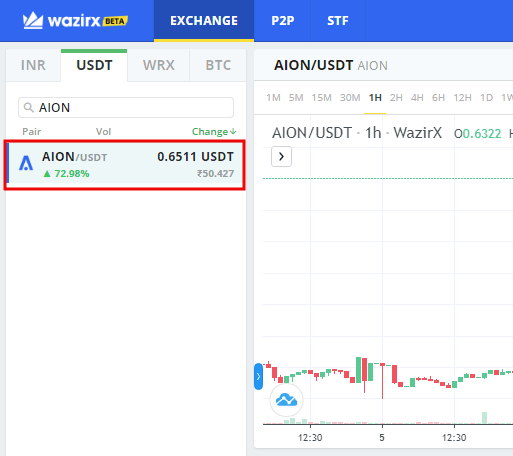

We provide many options for buy bitcoin or many cryptocurrencies according to the budget at WazirX.
If you need to set up an account on WazirX. Follow the below steps:
Download the WazirX app or visit the WazirX website. After that, hit the sign-up button.
Enter your e-mail address (which you use) and a password.
Click on the account activation link in the e-mail.
Click on the terms and conditions of the checkbox, but read it once before checking.
Lastly, press the Sign Up
A verification E-mail will be sent to you after pressing the sign-up button. If you received any e-mail, click on the Verify E-mail to complete the process. If you have not checked your spam folder, then press resend button here. You can see the message on successful verification:
We recommend enabling 2-factor authentication (2FA) for security purposes. You can do this by downloading the Google Authentication app and connect your account.
The last step of the account setup process is KYC verification.
To deposit money in INR or crypto form, you have to complete your KYC process. Follow the steps to complete the entire KYC process:
Click on your Profile tab, and after that, click on the Complete Verification.
Enter all the details and government-approved ID cards.
After that, enter your bank details. WazirX uses a bank account for all future withdrawals.
Upload images of PAN, Aadhar, and a picture in JPG or PNG form.
Once the details are verified, you can deposit the funds.
WazirX Trading Fee
WazirX's fees are called flat fees, where the manufacturers are charged the same fee. WazirX's fees are 0.20% for the borrower. Today, we see more exchanges moving towards lower trading fees such as 0.10%. So in comparison, 0.20% is probably slightly above the industry average.
WazirX Withdrawal Fee
Withdrawal fees depend on the crypto asset which you are withdrawing. Nevertheless, they are usually a fixed amount of relevant crypto assets and not a percentage-based trading fee.
According to empirical studies from Cryptowisser.com, the industry average BTC-clearance fee is 0.0006 BTC.
WazirX charges a withdrawal fee in line with the global industry average, i.e., 0.0006 BTC per BTC clearance.
Deposit methods
WazirX allows wire transfer deposits but not credit card deposits when it comes to depositing methods.
On 6 June 2019, WazirX announced the payment service provider and making it possible for Indonesian investors to deposit Indonesian rupiah from the trading platform.
You can use two methods to buy the cryptocurrency of your choice.
You can use a WazirX account to access the spot exchange market and search for the cryptocurrency you wish to purchase.
There are 100+ cryptocurrencies available for trading on the WazirX platform.
Currency is combined with INR - You can place a purchase order using the purchase form and get the cryptocurrency of your choice.
For example, if you want to buy Ethereum, you have to fill in the purchase order and Ethereum because it has an INR pair.
The currency does not have an INR pair - In these cases, you have to look for the currency pair. Most cryptocurrencies have a USDT pair.
You first buy USDT. Once you receive USDT in your account, you can use it to purchase your required currency coin.
For example, if you want to buy Aion Coin (AION). The coin does not have any INR pair but a USDT pair.
Firstly, you have to buy USDT and then use USDT to buy Aion Coin.
P2P is a Wazirx auto-order matching engine where you can buy USDT by using INR Wazirx Acts and serves as an escrow in the entire transaction so that the transaction is safe and honored.
To purchase USDT on the P2P market, you can place an order from your WazirX account, which will be matched with the seller of a particular currency.
You have to transfer money to the seller. When the seller confirms the receipt, WazirX issues currency to you.
After acquiring USDT, you can use it to purchase any cryptocurrency.